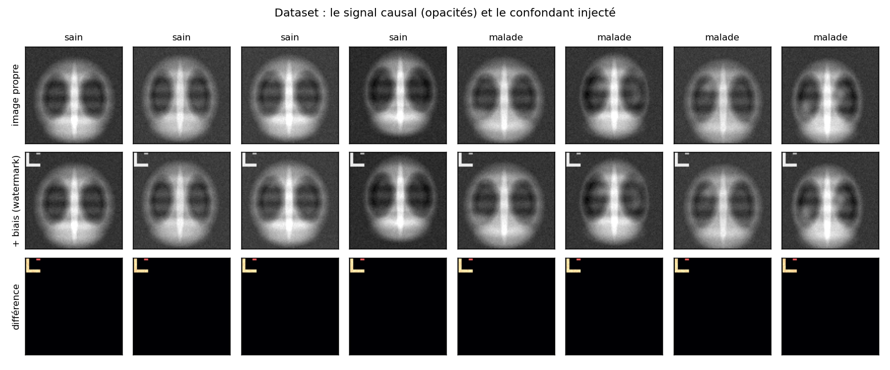
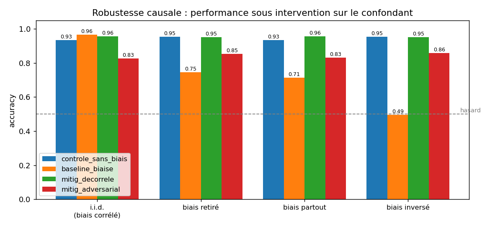
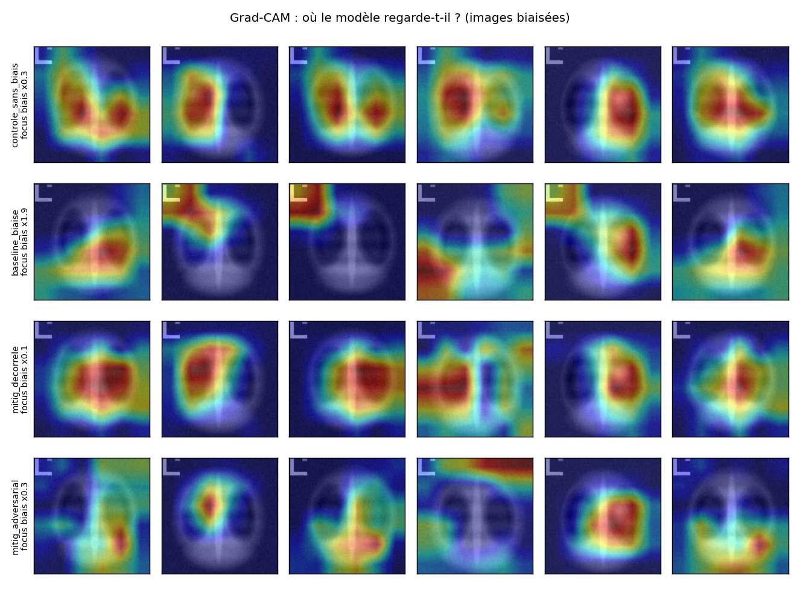

Signal biomédical
Détection de crises d'épilepsie
Chaîne complète sur EEG : ondelettes discrètes, indicateurs par sous-bande, classification des fenêtres suspectes.
Projets · IA & machine learning en Python
Deux études de cas approfondies sur la fiabilité des modèles médicaux, puis l'ensemble de mes projets de signal, de vision et d'apprentissage. Le code de chacun est public.
Étude de cas 1 · robustesse causale
Un classifieur n'optimise qu'une chose : séparer les classes. Si les malades viennent surtout d'un autre hôpital, l'appareil d'acquisition devient un prédicteur parfait, et le modèle s'en sert.
J'ai reproduit ce phénomène sur des radiographies générées où la cause du diagnostic est connue par construction. Tout succès obtenu sans regarder les poumons est un raccourci démontré, pas soupçonné.
Le modèle biaisé, en trois chiffres
Seul le glyphe change. L'attention Grad-CAM quitte les poumons, la probabilité bascule, le diagnostic avec elle : c'est le cas pour 51,7 % des 800 patients de test.
Deux corrections comparées
Le confondant cesse d'être informatif. Bascule ramenée à 0,005, sans perte d'exactitude, mais il faut pouvoir changer la composition des données.
Une tête adversariale devine le biais, l'encodeur la rend aveugle. Bascule à 0,051 sur les données inchangées, au prix d'une dizaine de points d'exactitude.
L'entraînement adversarial n'a pas convergé (adv_acc remonte
à 0,809 au lieu de tendre vers 0,50). L'écart avec la décorrélation ne
prouve donc pas sa supériorité.

do(biais = b) au sens de Pearl :
on force la valeur du confondant, tout le reste est tenu constant. Ce qui
est mesuré est un effet causal, pas une association.

Chaque modèle est évalué sur quatre configurations construites à partir des mêmes images propres : biais corrélé comme à l'entraînement, artefact retiré partout, artefact présent partout, artefact déplacé sur la classe opposée.
En i.i.d., le modèle biaisé atteint 0,983 sur les 406 malades porteurs de l'artefact, et 0,294 sur les 17 qui ne l'ont pas. Il échoue précisément sur les patients atypiques, ceux pour qui une aide au diagnostic aurait le plus de valeur. La moyenne les efface.
La densité d'attention Grad-CAM dans la zone du filigrane atteint ×1,87 pour le modèle biaisé, contre ×0,31 pour le contrôle et ×0,11 pour le bras décorrélé.
Avec un confondant global (un changement de gamma qui simule un autre appareil), le raccourci est comparable (0,959 en i.i.d., 0,339 en inversé) mais aucune carte de saillance ne peut le révéler. Seuls les tests contrefactuels détectent les deux régimes.

Vérification indépendante par régression logistique, en dix secondes et sans PyTorch : 0,960 en i.i.d., 0,209 en inversé. Le réseau convolutif et le modèle linéaire s'effondrent de la même façon : le raccourci vient des données, pas de l'architecture.
Étude de cas 2 · quantification d'incertitude
Un réseau qui se trompe rend quand même une probabilité proche de 1, et le praticien ne sait pas quels cas relire. umi compare quatre façons de produire une incertitude fiable, sur un protocole identique.
La question n'est pas « quel modèle est le plus précis », mais « peut-on croire la confiance qu'il annonce, et à quel prix ».
Un modèle honnête toucherait la diagonale : annoncé à 80 %, il aurait raison 80 % du temps. Plus il est sûr de lui, plus il se surestime. L'animation montre la recalibration qui referme l'écart, mesuré par l'ECE.
Softmax recalibré, MC Dropout, ensemble profond et apprentissage évidentiel (Dirichlet).
PyTorch
Totale, aléatoire (le bruit de l'image) et épistémique (l'ignorance du modèle).
Entropie · Dirichlet
ECE, Brier, NLL, AUROC de détection d'erreur, courbe risque-couverture.
NumPy seul
Chaque méthode est chiffrée en passes avant. À calibration égale, la moins chère gagne.
Coût / calibration
La calibration répond à « le chiffre de confiance est-il juste en moyenne ». La courbe risque-couverture répond à ce qu'un service demande vraiment : si l'on renvoie à un lecteur humain les cas les plus incertains, de combien le taux d'erreur baisse-t-il sur les cas restants ? C'est cette lecture qui décide d'un déploiement.
Le protocole inclut une dégradation contrôlée : sept corruptions d'image sur cinq niveaux de sévérité. Le comportement recherché est que l'exactitude baisse et que l'incertitude monte en même temps. Un modèle qui reste sûr de lui pendant qu'il se trompe est le pire des cas.
Un classifieur ne produit qu'une distribution pour toute l'image. La carte spatiale est reconstruite par occlusion : on masque une zone, on relance la chaîne et on mesure la variation de l'incertitude, pas du score de classe. Une zone qui rend le modèle incertain quand on la cache portait la preuve ; une zone qui le rend plus confiant contenait un signal contradictoire.
Le verdict est écrit par la machine : la commande
run-all entraîne, évalue, trace les figures et génère un
rapport qui désigne la méthode la mieux calibrée, la meilleure en
détection d'erreur et la moins chère.
Signal & vision en Python
Signal biomédical, maintenance prédictive, télécoms numériques et vision temps réel.
Signal biomédical
Chaîne complète sur EEG : ondelettes discrètes, indicateurs par sous-bande, classification des fenêtres suspectes.
Maintenance prédictive
Analyse vibratoire de roulements à billes : détection et classification automatique des défauts mécaniques.
Télécoms numériques
Synchronisation de porteuse, égalisation de canal et analyse du taux d'erreur binaire.
Vision par ordinateur
Détection d'objets en temps réel par YOLOv8, avec interface affichant débit et latence.
Vision embarquée
Détection de personnes, analyse de mouvement, suivi de main et enregistrement automatique des séquences utiles.
Apprentissage automatique
Séries temporelles, vision, traitement du langage et fondamentaux codés depuis les équations.
Envoyez-moi la fiche de poste. Je réponds sous 24 h avec les projets qui s'en rapprochent le plus.